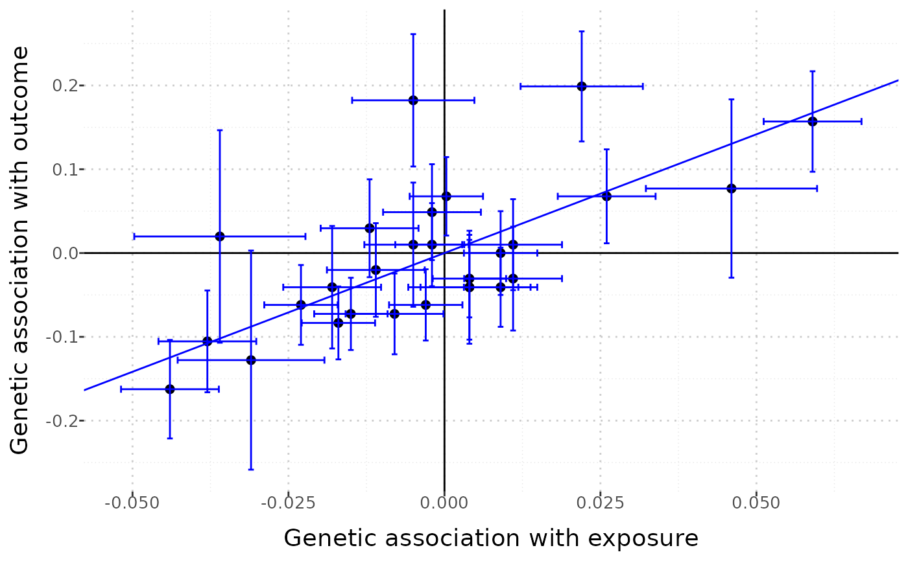
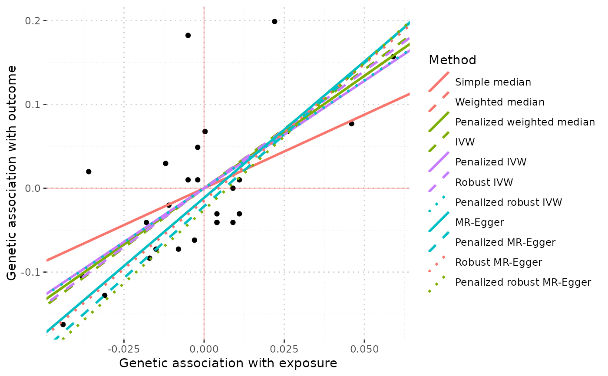

Draw a scatter plot of the genetic associations and/or causal estimates
Source:R/AllGenerics.R, R/mr_plot-methods.R
mr_plot.RdThe function mr_plot has three functionalities. It can generate a visual representation of MRInput, MRMVInput and MRAll objects.
Usage
mr_plot(
object,
error = TRUE,
line = "ivw",
orientate = FALSE,
interactive = TRUE,
labels = FALSE
)
# S4 method for MRInput
mr_plot(
object,
error = TRUE,
line = "ivw",
orientate = FALSE,
interactive = TRUE,
labels = FALSE
)
# S4 method for MRAll
mr_plot(object)
# S4 method for MRMVInput
mr_plot(
object,
error = TRUE,
line = TRUE,
orientate = FALSE,
interactive = TRUE,
labels = FALSE
)Arguments
- object
An
MRInputobject or anMRMVInputobject or anMRAllobject.- error
When viewing an
MRInputorMRMVInputobject, one can choose whether to include error bars (default is to include). For anMRMVInputobject, the horizontal error bars only take into account uncertainty in the causal estimates.- line
When viewing an
MRInputobject, one can choose whether to include the IVW estimate (line = "ivw") or the MR-Egger estimate (line = "egger"). When viewing anMRMVInput, one can choose whether to include a line through the origin with gradient 1 (line = TRUE) or not.- orientate
When viewing an
MRInputorMRMVInputobject, one can choose whether to orientate all genetic variants so that the associations with the risk factor are all positive. This is recommended particularly when plotting the MR-Egger estimate, although the default setting isFALSE.- interactive
When viewing an
MRInputorMRMVInputobject, one can choose whether to produce an interactive graph using theplotlypackage, or a static graph using the regularplotcommand.- labels
When viewing an
MRInputorMRMVInputobject withinteractiveset toFALSE, settinglabelstoTRUEmeans that the name of each genetic variants appears above the corresponding datapoint.
Details
The result is dependent on the type of object passed to mr_plot.
When the object is an MRInput object, the function uses either the plot command (if interactive is set to FALSE) or plotly syntax (if interactive is set to TRUE) to plot the association estimates against each other.
When the object is an MRMVInput object, functionality is similar except that we plot the estimated associations with the outcome on the y-axis, and fitted values of the associations with the outcome from the inverse-variance weighted method on the x-axis.
If interactive is set to FALSE, then a static graph is produced. By setting labels to TRUE, the names of the genetic variants appear above the points. This produces a less visually appealing graph, but one where it is easier to identify the individual genetic variants.
If interactive is set to TRUE, then the plot is interactive and the user can hover over the various points to see the name of the associated genetic variant and its association estimates.
When the object is an MRAll object, the function generates a ggplot to compare the causal estimates proposed by different methods.
Examples
mr_plot(mr_input(bx = ldlc, bxse = ldlcse, by = chdlodds, byse = chdloddsse),
line="egger", orientate = TRUE)
mr_plot(mr_input(bx = ldlc, bxse = ldlcse, by = chdlodds, byse = chdloddsse),
line="ivw", interactive=FALSE) # produces a static graph

mr_plot(mr_allmethods(mr_input(bx = ldlc, bxse = ldlcse,
by = chdlodds, byse = chdloddsse), method="all", iterations = 50))

# iterations is set to 50 to reduce runtime for the mr_median method,
# 10000 iterations are recommended in practice